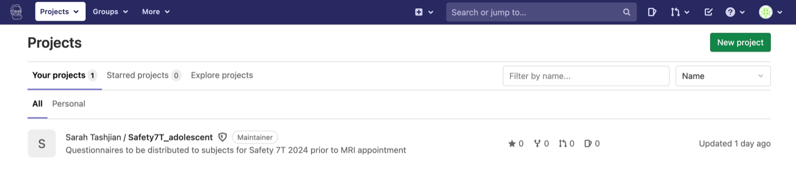
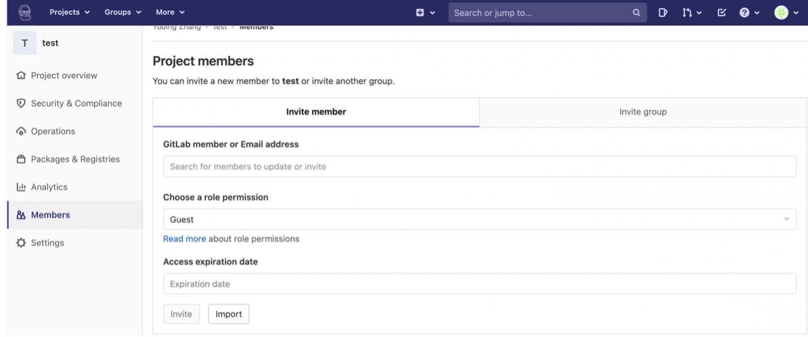

Pushing questionnaires to Pavlovia
For the AND lab
If you haven’t used Gitlab or Github before, you are basically cloning an empty folder (that you created for your project) from the server to your local device, adding files/making changes to this folder, and sending things back to the server.
After creating your Pavlovia account, go to Gitlab Pavlovia: Pavlovia Github
Click “new project” on the right corner and then “create blank project”

*** Either credits or a license are necessary to run your experiment. If you need to use Sarah’s license, please ask her for her account details and create a new project using her account. ***
You should have something like this:

*** If you used Sarah’s account to create the new project and would like to run it later using your own account, you can share the project with yourself (“Members”). ***
